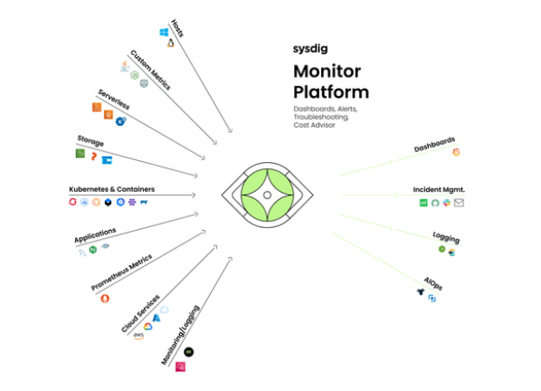
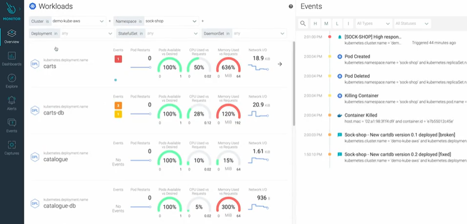
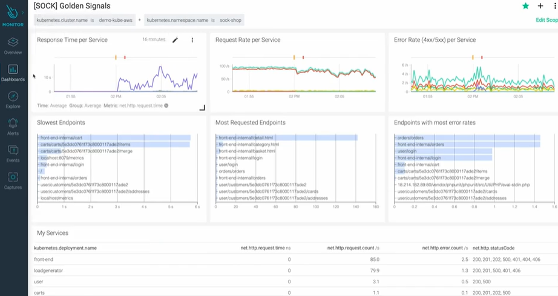

Modern organizations are rapidly adopting Kubernetes, containers, and cloud-native architectures to achieve scalability and agility. However, this shift introduces new layers of complexity in monitoring, security, and incident response. The Sysdig Monitor Platform addresses these challenges by providing a unified solution that combines observability, runtime security, and operational insights across the entire cloud-native stack.

At the core of the Sysdig platform is a centralized monitoring engine that collects data from multiple sources, including Kubernetes clusters, containers, applications, cloud services, and infrastructure components. It integrates seamlessly with Prometheus metrics, cloud provider services, and even host-level telemetry.
This unified visibility allows teams to move away from fragmented monitoring tools and instead rely on a single pane of glass for:
Sysdig is purpose-built for Kubernetes environments. It provides deep visibility into cluster health, pod performance, container behavior, and network activity. By leveraging runtime data, it enables teams to understand not just what is happening, but why it is happening.

This level of insight is critical for DevOps and SRE teams managing dynamic and distributed systems.
One of Sysdig’s strongest advantages is its integration of security directly into the monitoring platform. Instead of treating security as a separate function, Sysdig embeds it into the runtime layer.
By analyzing system calls and runtime behavior, Sysdig can detect suspicious activities such as privilege escalation, unauthorized access, or abnormal process execution.
Sysdig bridges the gap between DevOps and Security Operations Centers (SOC). Alerts generated from runtime events and anomalies can be integrated into incident management workflows.
With built-in logging and audit trails, teams gain full traceability of incidents from detection to resolution.

Beyond monitoring and security, Sysdig supports advanced operational capabilities such as:
These features help reduce manual effort, improve system reliability, and enable predictive operations.
Sysdig is designed to work across hybrid and multi-cloud environments. Whether workloads run on AWS, Azure, Google Cloud, or on-premises infrastructure, the platform ensures consistent monitoring and security policies.
The Sysdig Monitor Platform provides a comprehensive solution for organizations operating in cloud-native environments. By combining monitoring, security, and incident response into a single platform, it eliminates tool sprawl and enhances operational efficiency.
For modern DevOps, SRE, and security teams, Sysdig offers the visibility and control needed to manage complex systems, detect threats in real time, and maintain high availability across distributed environments.